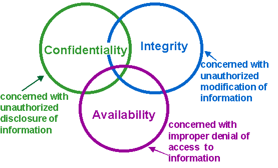
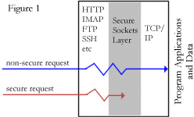
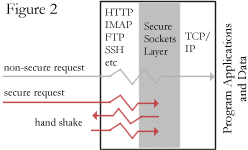
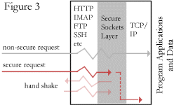
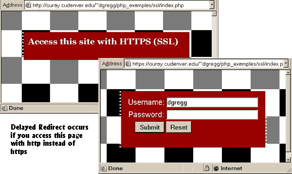
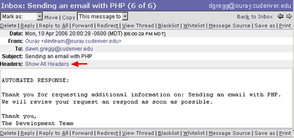
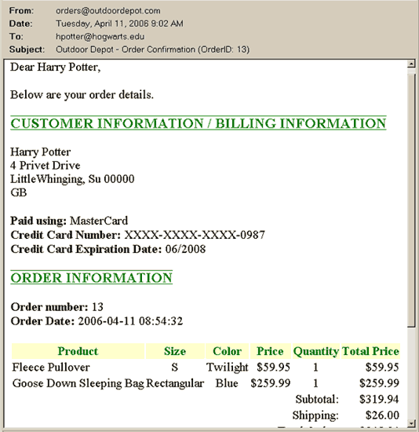

Security
- Security and trust are important in conducting business
- evolved over centuries in the traditional paper world
- e.g. banks require trust for people to deposit money
- in the electronic world, we face many new challenges
- The Internet is targeted towards flexibility, interoperability,
connectivity rather than security
- Remote, and sometimes, unknown business parties
- Easy to commit crime due to
- lack of forensic evidence
- anonymity
- sensitive data repositories are vulnerable targets
- rare regular auditing of computer usage
- non-existing regulatory policies and laws
- Executable contents on the client side (Java applets, activeX controls)
- Push technology (Content is automatically uploaded to the client
computer!)
- CGI scripts (Executable on the server side)
- Many weak links
- vulnerabilities in client software, server software, back-end databases
- web clients (IE version 3.0 had a security vulnerability) and servers
- the whole system is as secure as its weakest link
Security Objectives
- Maintain the confidentiality and integrity of both systems and data,
without limiting the availability or accessibility to the appropriate users.

Costs of Insecure Systems
- direct financial loss resulting from fraud
- loss of business opportunity due to disruption of service
- unauthorized use of resources
- loss of customer confidence
- costs resulting from uncertainties
- false and malicious web sites posing as selling agents
- theft of customer data from selling agents
- loss of privacy due to the misuse of cookies
- customer impersonation
Risks of Insecure Systems
There are basically three overlapping types of risk that we need to worry
about on systems connected to the Internet:
- Bugs or misconfiguration problems in the Web server that allow
unauthorized remote users to:
- Steal confidential documents not intended for their eyes.
- Execute commands on the server host machine, allowing them to modify the
system.
- Gain information about the Web server's host machine that will allow
them to break into the system.
- Launch denial-of-service attacks, rendering the machine temporarily
unusable.
- Browser-side risks, including:
- Active content that crashes the browser, damages the user's system,
breaches the user's privacy, or merely creates an annoyance.
- The misuse of personal information knowingly or unknowingly provided by
the end-user.
- e.g. Identity theft or Session hijacking
- Interception of network data sent between browser and server via
eavesdropping. Eavesdroppers operate from any point on the path between
browser and server:
- The network on the browser's side of the connection.
- The network on the server's side of the connection (including
intranets).
- The client or server's Internet service provider (ISP).
- Either ISPs' regional access provider.
Security Technologies
- Security Protocols/Software
- Secret-key cryptography
- Public key cryptography
- Digital Signatures
- Secure Socket Layer
- Authentication & Authorization
- Network & Resource Security
- Access Control
- Securing Data
- Auditing & Intrusion Detection
- Incident response and recovery
Secret-key cryptography
- Secret-key cryptography is sometimes referred to as symmetric
cryptography. It is the more traditional form of cryptography, in which a
single key can be used to encrypt and decrypt a message. Secret-key
cryptography not only deals with encryption, but it also deals with
authentication.
- The main problem with secret-key cryptosystems is getting the sender and
receiver to agree on the secret key without anyone else finding out. This
requires a method by which the two parties can communicate without fear of
eavesdropping.
- If they are in separate physical locations, they must trust a courier, a
phone system, or some other transmission medium to prevent the disclosure of
the secret key. Anyone who overhears or intercepts the key in transit can
later read, modify, and forge all messages encrypted or authenticated using
that key. The generation, transmission and storage of keys is called key
management; all cryptosystems must deal with key management issues.
Because all keys in a secret-key cryptosystem must remain secret, secret-key
cryptography often has difficulty providing secure key management, especially
in open systems with a large number of users.
- The most common techniques in secret-key cryptography are block
ciphers, stream ciphers, and message authentication codes.
- The advantage of secret-key cryptography is that it is generally faster
than public-key cryptography.
Public key cryptography
- In order to solve the key management problem ith secret-key Cryptograpyy,
Whitfield Diffie and Martin Hellman introduced the concept of public-key
cryptography in 1976.
- Public-key cryptosystems have two primary uses, encryption and digital
signatures.
- In their system, each person gets a pair of keys, one called the public
key and the other called the private key.
- The public key is published, while the private key is kept secret.
- The need for the sender and receiver to share secret information is
eliminated; all communications involve only public keys, and no private key is
ever transmitted or shared.
- In this system, it is no longer necessary to trust the security of some
means of communications. The only requirement is that public keys be
associated with their users in a trusted (authenticated) manner (for instance,
in a trusted directory).
- Anyone can send a confidential message by just using public information,
but the message can only be decrypted with a private key, which is in the sole
possession of the intended recipient.
- Public-key cryptography can be used not only for privacy (encryption), but
also for authentication (digital signatures) and other various techniques.
- In a public-key cryptosystem, the private key is always linked
mathematically to the public key. Therefore, it is always possible to attack a
public-key system by deriving the private key from the public key. Typically,
the defense against this is to make the problem of deriving the private key
from the public key as difficult as possible. For instance, some public-key
cryptosystems are designed such that deriving the private key from the public
key requires the attacker to factor a large number, it this case it is
computationally infeasible to perform the derivation.
Encryption
- When Alice wishes to send a secret message to Bob, she looks up Bob's
public key in a directory, uses it to encrypt the message and sends it off.
Bob then uses his private key to decrypt the message and read it. No one
listening in can decrypt the message. Anyone can send an encrypted message to
Bob, but only Bob can read it (because only Bob knows Bob's private key).
Digital Signatures
- To sign a message, Alice does a computation involving both her private key
and the message itself. The output is called a digital signature and is
attached to the message. To verify the signature, Bob does a computation
involving the message, the purported signature, and Alice's public key. If the
result is correct according to a simple, prescribed mathematical relation, the
signature is verified to be genuine; otherwise, the signature is fraudulent,
or the message may have been altered.
Secure Sockets Layer (SSL)
- The Secure Sockets Layer (SSL) protocol has become the universal standard
on the Web for authenticating Web sites to Web browser users, and for
encrypting communications between browser users and Web servers.
- SSL is built into all major browsers and Web servers, simply installing a
digital certificate, or Server ID, enables SSL capabilities.
- SSL comes in two strengths, 40-bit and 128-bit, which refer to the length
of the "session key" generated by every encrypted transaction.
- It is illegal to export the 128-bit encryption technologies.
Information on the legalities and politics of cryptography can be found at
The Free Crypto Website.
- An encrypted SSL connection requires all information sent between a client
and a server to be encrypted by the sending software and decrypted by the
receiving software, protecting private information from interception over the
Internet.
- In addition, all data sent over an encrypted SSL connection is protected
with a mechanism for detecting tampering - that is, for automatically
determining whether the data has been altered in transit.
How SSL Works
- Internet communication typically runs through multiple program layers on a
server before getting to the requested data such as a web page or CGI scripts.
- The outer layer is the first to be hit by the request. This is the high
level protocols such as HTTP (web server), IMAP (mail server), and FTP (file
transfer) (Figure 1 below).
- If the request is for a non-secure connection it passes through to the
TCP/IP layer and the server application or data.
- If the client requested a secure connection the SSL layer initiates a
handshake to begin the secure communication process.
|

Initial Request |

Handshake |

Secure Request after
Handshake completed |
- Typically it is enough to know that server and client establish a secure
connection but the following is a summary of what happens (Figure 2):
- The customer's web browser sends the web site server it's methods of
encrypting data and some random data that
the encryption programs can use in the encryption routines.
- The server returns it's own random data to be used for encryption as
well as it's SSL
certificate and its public key.
- The customer's browser checks the information it received. If the secure
certificate information on the web site doesn't match the domain name the
browser will notify the customer that there is a problem. The certificate
expiration date and valid certificate authority are also automatically checked at this
point.
- The browser creates a "premaster secret" that will be used to
encrypt the rest of the session. This is a random key that it encrypts combined with the
server's public key string and sends the new encrypted
secret string back to the server
- The browser and the web server use the "premaster secret" string
to create a new "master secret" string and use it to create session
keys that their encryption programs
use for the rest of the session to encrypt and decrypt all transmissions for the rest of the session
(Figure 3).
- The SSL handshaking is slow, and if this was to occur with every HTTP
request, the performance of a secure web site would be poor. To improve
performance, SSL uses the concept of sessions to allow multiple requests to
share the negotiated cipher suite, the shared secret key, and the
certificates. An SSL session is managed by the SSL software and isn't the same
as a PHP session.
HTTPS Example: Authentication
and Authorization
- If you are running a website on a server that is SSL enabled - all you
need to do is access a web page using HTTPS instead of HTTP!
- The process of encrypting and decrypting data slows down a web
server so generally you usually only want to use HTTPS for sensitive data
like:
- Password transmission
- Credit card processing
- Passing personal information to & from the server.
- HTTPS should be used when Authenticating a person has access to specific
resources and authorizing them to access specific pieces of data.
- Authentication: Authentication is the process of verifying
identity—that someone (or something) is who they claim to be (e.g. using pa
password).
- Authorization: Once a person's identity is authenticated,
authorization decisions can be made.
- Access is determined by checking
information about the principal against some access control information, such as
an Access Control List (ACL).
- Some
clients may be allowed full access to all data, others may only be allowed to
access a subset of the data, others may have read-only access.
- If access to specific data is restricted it should be passed back to the
user using https.
- It is possible to check IF someone is using HTTPS to access a secure page
and if not automatically redirect them to a secure version of the page.
- Is also possible to use PHP to rewrite a URL so that a link (or
redirection) uses a different protocol (HTTP -> HTTPS or HTTPS ->HTTP).
- The include file (below) can be used
urlfunc.inc  index.php
password.php
Online
Demo
index.php
password.php
Online
Demo
(you can use guest, guest1 to log in)
<?php
session_start();
// If this page is not using https - reload the current page using https
// Uses the $_SERVER variables to get current filename w/o http://
if (!$HTTP_SERVER_VARS["HTTPS"]
) {
header("Location: https://$_SERVER['HTTP_HOST']$_SERVER['REQUEST_URI']"
);
exit;
}
// If the user is logged in redirect to the page they requested using
http
function auth($filename
)
{
if(isset($_SESSION['auth']
) && isset($_SESSION['auth']
)==true) {
header("Location: " . insecureURL
($filename
));
exit;
}
}
// redirect to an insecure URL from a secure page
function insecureURL($filename)
{
// get full URL of current page
$urlpath=$_SERVER['HTTP_HOST'] . $_SERVER['REQUEST_URI' ] ;
//get the current filename
$file =
basename($urlpath
);
// if the url contains the old filename - strip it off and
// add the name of the new file to it (http://abc.com/old.php)
// otherwise add the name of the new file to the urlpath
if(strpos($urlpath, $file
))
return "http://" .
substr ( $urlpath, 0, strlen($urlpath) - strlen($file)) . $filename ;
else
return "
http://$urlpath$filename";
}
?>

Access Control
- The first and best line of defense on the Internet is to use a
Firewall - which can be either a piece of hardware or software that all of the information
that your computer exchanges goes through.
- Firewalls allow rules to be specified about what information can be shared
and with whom; then the Firewall ensures that these rules don't get broken.
- Firewalls dramatically affect the accessibility of your system and usually
will need to be modified in order to allow programs to work.
- Firewalls also increase the time required to communicate with the system
because they need to check everything going and coming from the system to see
if it obeys the rules that have been set-up.
Proactive data security
- Research shows that AT LEAST 20% of organizations with external access have been hacked
in the past year.
- For most organizations it is not a question of if they will be hacked but
when.
- If an organization is storing highly sensitive data (credit card numbers,
social security numbers) it is good practice to encrypt the database data.
- The PHP
crypt( ) function can be
used only to store passwords, personal identification numbers (PINs), and so on
because these functions are one-way: once the original password is encrypted
and stored, you can't get it back because there are no corresponding decode
functions.
- To store sensitive information the application needs to use, you need
two-way functions that use a secret key to encrypt and decrypt the data.
- PHP has an add on library called mcrypt, which supports a wide
variety of cryptographic algorithms such as DES, TripleDES, Blowfish
(default), 3-WAY, SAFER-SK64, SAFER-SK128, TWOFISH, TEA, RC2 and GOST.
- It also supports four block cipher modes
- ECB (electronic codebook) is suitable for random data, such as
encrypting other keys.
- CBC (cipher block chaining) is especially suitable for encrypting files
where the security is increased over ECB significantly.
- CFB (cipher feedback) is the best mode for encrypting byte streams where
single bytes must be encrypted.
- OFB (output feedback, in 8bit) is comparable to CFB, but can be used in
applications where error propagation cannot be tolerated. It's insecure
(because it operates in 8bit mode) so it is not recommended to use it.
- The program below would encrypt a string and then decrypt the string and
display it.
Note: I could not test the code because, while Ouray has mcrypt
installed - no cryptographic algorithms were added so the code crashes...
<?php
$data = $_REQUEST['data'];
$secretkey = $_REQUEST['skey'];
$td =
mcrypt_module_open('blowfish', '', 'cbc', '');
$iv =
mcrypt_create_iv(mcrypt_enc_get_iv_size($td),
MCRYPT_DEV_RANDOM);
$ks =
mcrypt_enc_get_key_size($td);
$key =
substr(md5($secretkey), 0,
$ks);
mcrypt_generic_init($td,
$key,
$iv);
$encrypted =
mcrypt_generic($td,
$data);
mcrypt_generic_deinit($td);
mcrypt_generic_init($td,
$key,
$iv);
$decrypted =
mdecrypt_generic($td,
$encrypted);
mcrypt_generic_deinit($td);
mcrypt_module_close($td);
echo trim($decrypted)
. "\n";
?>
Auditing and Intrusion Detection
- Check both the system and Web logs regularly for suspicious activity. The
program Tripwire (Unix), and Internet Security Scanner (Unix & NT) are helpful
for detecting this type of activity:
- Every company (and person) with a permanent connection to the Internet should have some
mechanism for intrusion detection.
Incident Response and Recovery
- Once an attack has occurred you will need to determine what systems and
information has been compromised, determine if any viruses have been left on
your system and begin an effort to identify the source of the attack.
- You can use access logs / dates to help identify what data may have been
accessed. Frequent back-ups are helpful when attempting to recover from a
loss of data.
- You can use virus checking software to attempt to find any viruses left on
you system.
When identifying the source of the attack the best place to start is to
contact the ISP that the connection is coming from.
- With the IP address, you can find out who the ISP is at the following
URL:
http://www.arin.net/whois/arinwhois.html
- Make sure to include any pertinent information you have gathered (times,
IP addresses, etc) in your initial email to the ISP.
Human Firewall
- PC users are frequently pinpointed at the weakest link in the security
chain.
- A recent survey of developers conducted by Evans Data, a market
intelligence firm, found that one in four believed that biggest barrier to
computer security is users refusing to follow policies.
- Nearly one in 10 developers thought security solutions were too complex
for the average user.
- The lack of an informed work force can be costly for a company, since
technology can only go so far in protecting a network, security experts said.
- Education is the first line of defense however most companies do not do
it:
- The Human Firewall Security
Awareness Index Survey found that 48 percent of the companies participating in
the survey had never provided formal security training for their work force.
- And of those companies that had provided some security training - most had
only posted information about computer security on their intranet, and only 15
percent had provided any security training in the previous six months.
On-line Payment Mechanisms
- A Payment Gateway is an e-commerce service that authorizes payments
for e-businesses and online retailers. It is the equivalent of a physical POS
(Point-of-sale) terminal located in most retail outlets. Payment gateways
encrypt sensitive information, such as credit card numbers, to ensure that
information passes securely between the customer and the merchant.
- Payment gateways encrypt information handled through SSL. This prevents
opportunity for
fraud, and adds security to the transaction process. Gateways communicate
with a variety of entities, including:
- The customer
- The merchant (through their website)
- Credit Card companies (by verifying information)
-
Internet Merchant accounts that relay order information from the gateway
to the merchant's bank account.
- There are hundreds of online payment gateway providers that allow you to
process commercial
transactions over the Web without compromising credit card numbers or other
confidential information, two of them are:
- VeriSign Payment Services
- Paypal
- The advantage of using most payment gateways is that you are not
responsible for storing your customer's credit card numbers.
VeriSign Payment Services
- VeriSign Payment Services (now owned by PayPal/eBay) uses specialized software on the merchant and customer's
sides of the connections to provide for secure payments across the Internet.
- For merchants to accept VeriSign Payment Services payments they must:
- Get an Internet approved merchant account from an affiliated merchant
bank.
- An Internet merchant account is configured to allow you to accept
"card not present" transactions which are specifically designated as
originating through the Internet.
- From VeriSign's suite of solutions, select the VeriSign product that
works best for your business.
- Payflow Pro: Fully customizable online payment platform
- Payflow Link: VeriSign-hosted online payment service
- Register with VeriSign: The online registration guides you through the
process of setting up your web page to process payments.
- The main advantage of VeriSign Payment Services is that it provides the merchant with a
fully functional, externally managed payment processing system.
- VeriSign stores all transaction information from your web store, and
uses the latest secure SSL encryption technology to ensure data safety.
- While you have access to all transaction-critical information, VeriSign
protects credit card data with the highest level of security, so you never
have to worry about compromising your customer's sensitive credit card data.
- Disadvantages include the risk of centralizing so much financial
information on one server system (VeriSign Payment Services), and the accompanying dependence
on the VeriSign Payment Services servers' performance and throughput characteristics.
In addition, the fees charged for processing credit card transactions make
VeriSign Payment Services impractical for small purchases, such as "pay per play" on-line
video games.
(More information on VeriSign Payment Services is available at:
http://www.verisign.com/products-services/payment-processing/ )
Paypal
- PayPal enables any individual or business with an email address to
securely, easily and quickly send and receive payments online.
- PayPal caters to small businesses that do not want to set-up their own
online payment mechanisms.
- PayPal has a number of options that allows users to quickly set-up online
payment mechanisms on their Web sites:
-
Send Money allows you to pay anyone with an
email address.
- Request Money just enter the recipient's email address and the amount you are
requesting. The recipient gets an email and instructions on how to pay you
using PayPal at www.paypal.com.
- Buy Now Buttons
Buy Now Buttons is a low-cost way
for you to accept credit card and bank account payments, and can be fully
integrated with your website in a few easy steps.
- When a buyer clicks the Buy Now
button, he will be taken to a secure PayPal payment page, where he
can log in to an existing PayPal account or sign up for a new one,
and quickly complete the purchase.
- If you dynamically generate portions of your site, you can populate your
Buy Now buttons dynamically and save time by updating the variables with
information from your database. To use the button above for a different item,
you would only need to edit two variables: item_name, and amount.
- PayPal Shopping Cart: When you use PayPal's free Shopping
Cart on your website, your customers can purchase multiple items with a single
payment, browse your entire selection, and view a consolidated list of all
their items before purchasing. The PayPal Shopping Cart is a low-cost way for
you to accept credit card and bank account payments, and can be fully
integrated with your website in a few easy steps.
- When a buyer clicks the "Add to Cart" button, a new window will appear
listing the contents of the buyer's PayPal Shopping Cart, including the item
just added. To make the purchase, the buyer clicks "Checkout" from this
window.
- PayPal charges fees based on the type of account you set-up and how much
you sell. PayPal charges Premier and Business accounts to receive
payments. Personal accounts are free, but may not receive credit card
payments.
|
| Personal Account
| Premier/Business Account
|
| Open an Account |
Free |
Free |
| Send Money |
Free |
Free |
| Withdraw Funds |
Free for US bank accounts |
Free for US bank accounts |
| Add Funds |
Free |
Free |
| Receive Funds |
Free |
2.2% + $0.30 USD to
2.9% + $0.30 USD |
| Multiple Currency Transactions |
Exchange rate
includes a 2.5% fee* |
Exchange rate
includes a 2.5% fee* |
Server Generated Email
- There are many applications where a web designer might want the server to
automatically send an email on their behalf.
- Automated order receipt confirmation
- Notification on low stock levels
- Notification of errors in your applications
- Monthly newsletter based on customer purchase
- Shipping notification
- PHP has a built in
mail( ) function that will send mail from
any PHP program.
- The first argument to the function is the recipient,
- The second specifies
the message's subject and
- The third one should contain the body.
- There is an optional 4th argument that can contain additional headers like
From, Cc and Bcc.
- To send a simple sample message, we could use:
mail("dawn.gregg@cudenver.edu",
"Hi", "Just wanted to say hi!");
- The
mail( ) function's only requirement is that you have a mail server
installed (and linked) to your PHP application.
- Uniform Server has a plugin you could download to allow you to send
mail: hMailServer @
http://www.hmailserver.com
- Ouray has mail capabilities built in.
- The program below creates an automated response to a use's request for
information and sends the response to the user. It also sends a blind
copy of the email to me so (in theory). I could respond to the email.
The "From" address is a completely fake address - which is why many server
generated emails say do not respond to the email.
email.php
<?php
// Get email parameters from form passed to page
$to = $_REQUEST["to"];
$from = "devteam@ouray.cudenver.edu";
$subject = $_REQUEST["subject"];
// From is not a "required" values so need to add it to
// "additional" PHP header. Also can BCC yourself on the email
// The \r\n are required at the end of header lines
// The .= adds new headers to the existing header string
$headers = 'From: Ouray <' . $from . '>' .
"\r\n";
$headers .= 'Bcc: dgregg@ouray.cudenver.edu' . "\r\n";
$body= // Begin text-only response to request
"AUTOMATED RESPONSE:/n/nThank you for requesting additional information on:
$subject. We will
review your request an respond as soon as possible./n/nThank you,/nThe Development Team";
// Send the mail using the mail function
if (mail($to, $subject, $body, $headers))
{
echo "<p>Message successfully sent!</p>" ;
echo "<p>To: $to<br>From: $from<br>Subject:
$subject<br>Body: $body";
} else {
echo "<p>Message delivery failed...</p>" ;
}
?>

HTML & Other Complex Email Messages
<?php
$oid = $_REQUEST["oid"];
// include the database connection file
require("includes/db.inc");
// Select the order informaiton from the database
$qry = "Select * from Orders Where OrderID=" . $oid .
";";
$rs = mysql_query($qry)
or die('Query1 failed: ' . mysql_error() .
'<br>');
// only one item in ResultSet use ?_fetch_array() to move to
it
$row = mysql_fetch_array($rs);
$ship = $row["Ship"];
$total = $row["Total"];
// Set the the "to" for the email to the customer email
$to = $row["Email"];
$subject = "Outdoor Depot - Order Confirmation (OrderID: $oid)";
// To send HTML mail, the Content-type header must be set
$headers = 'MIME-Version: 1.0' . "\r\n";
$headers .= 'Content-type: text/html; charset=iso-8859-1' .
"\r\n";
// Additional headers just want to set from
// as a fake outdoor depot email address
$headers .= "From: orders@outdoordepot.com" . "\r\n";
// set message to include database data PLUS text and html
tags
// carriage returns embedded between "" will appear in file sent
$message =
"<html><head><title>Order Confirmation Outdoor Depot</title>
<style>
h3 { color: green; text-decoration: underline overline;}
th { background-color: #FFFFCC; color: darkgreen; }
</style>
</head><body>
<p>Dear " . $row['CName'] . ",
<p>Below are your order details.
<h3>CUSTOMER INFORMATION / BILLING INFORMATION</h3>
<p>" . $row['CName'] . "<br>" . $row['Address'] .
"
<br>" . $row['City'] . ", " . $row['State'] .
" " . $row['PostalCode']
. "
<br>" . $row['Country'] . "
<p><b>Paid using:</b>" . $row['PaymentMethod'] .
"
<br><b>Credit Card Number:</b> XXXX-XXXX-XXXX-" . substr($row['PaymentNumber'], 12, 4) .
"
<br><b>Credit Card Expiration Date:</b> " . $row['ExpDate'] .
"
<h3>ORDER INFORMATION</h3>
<p><b>Order number:</b> $oid
<br><b>Order Date:</b> " . $row['OrderDate'] .
"</p>
<!-- Start of order table displaying
product purchased -->
<table border=0>
<tr><th>Product</th><th>Size</th><th>Color</th>
<th>Price</th><th>Quantity</th><th>Total
Price</th></tr>";
// ended message string (above), will add to it later.
// query to select products purchased from the order details table
$qry = "Select * from OrderDetails Where OrderID=" . $oid .
";";
$rs = mysql_query($qry)
or die('Query2 failed: ' . mysql_error() .
'<br>');
$stotal = 0;
// loop to display products to a table
// just like the JavaScript Shopping cart
while($row = mysql_fetch_array($rs))
{
$itotal = (float)$row['Price']*(int)$row['Quantity'];
$stotal += $itotal;
// Continue message string with table rows
$message .= "<tr>
<td>" . $row['Product'] . "</td>
<td align=center>" . $row['ItemSize'] . "</td>
<td align=center>" . $row['Color'] . "</td>
<td align=right>$" . $row['Price'] . "</td>
<td align=center>" . $row['Quantity'] . "</td>
<td align=right>$$itotal</td></tr>";
}
$message .= // continue message string
"<tr><td colspan=5 align=right>Subtotal:</td>
<td align=right>$$stotal</td></tr>
<tr><td colspan=5 align=right>Shipping:</td>
<td
align=right>$$ship</td></tr>
<tr><td colspan=5 align=right>Total Order:</td>
<td
align=right>$$total</td></tr></table>
<h3>SHIPPING INFORMATION</h3>
<p>A shipping tracking number will be sent with your shipping
confirmation e-mail.
<p>Outdoor Depot Online
Sales<br>sales@OutdoorDepot.com<br>1-800-555-1212";
// end of message string
// Send the email
mail($to, $subject, $message, $headers);
?>

- To send an email message that includes an image or an attachment you need
to send a multi-part MIME message. For details on how to do this see:
http://www.zend.com/zend/spotlight/sendmimeemailpart1.php
- Note: It is worth noting that the mail()
function is not suitable for larger volumes of email in a loop. This function
opens and closes an SMTP socket for each email, which is not very efficient.
- For the sending of large amounts of email, see the
PEAR::Mail, and
PEAR::Mail_Queue packages